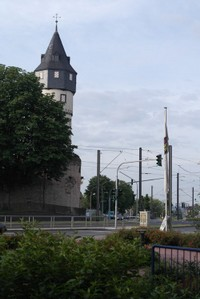
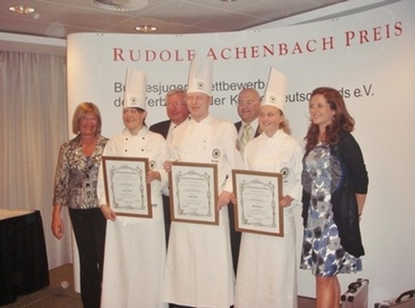
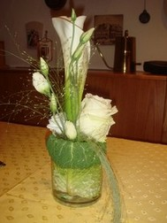
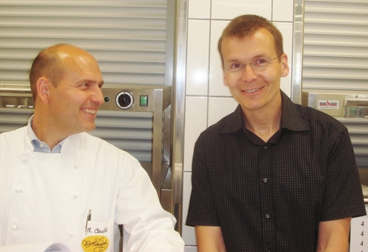

Wer wird den Achenbach Preis 2011 gewinnen?
Gekocht wurde zum Finale in den besonders für
Wettbewerbe ausgestatteten Küchen des
Best Western Premier IB-Hotels
Friedberger Warte in Frankfurt,
wo die neun Finalisten ideale Arbeitsbedingungen vorfanden.

Friedberger Warte
____Der Hausherr Michael Nehrdich
Die Preisverleihung fand wieder in festlichem Rahmen
im Sheraton Hotel & Towers am Frankfurter Flughafen statt.
Der bundesweite Nachwuchswettbewerb wurde in
diesem Jahr zum 37. Mal ausgetragen.
Zum Finale qualifizierten sich drei weibliche und sechs
männliche Köchinnen und Köche.

Max Zibis, Landwirtschaftliche Rentenbank, Frankfurt -Gewinner des Achenbach Preis 2011.
Den zweiten Platz besetzte Julia Komp, Resaturant "Zur Tant", Köln.
Rang drei belegte Mira Maurer, Colombi Hotel, Freiburg.
Alle neun jungen Nachwuchskräfte im letzten Ausbildungsjahr
gingen aus den regionalen Wettbewerben 2011 hervor
und kochten im finalen Wettbewerb mit großartigem Einsatz um die Wette.
Aufgabe war es in diesem Jahr erneut,
ein viergängiges Menü zu planen und zuzubereiten.
Die Teilnehmer mit Teinehmernummer
1 Max Zibis,_
Landwirtschaftliche Rentenbank, Frankfurt/Main,
Vereinigung der Köche Frankfurt e.V.
___________________
2 Pascal Richter,
__Hilton Hotel, Berlin,
Verein der Köche der Hauptstadt Berlin e.V.
___________________
3 Mira Maurer,__
Hotel Colombi, Freiburg,
Club der Köche Freiburg
_____________________
4 Katharina Grillmeier,
Blumenhotel Dehner, Rain am Lech,
Verein der Köche Donau-Ries e.V.
______________________
5 Fabio Galizia,-
Hilton Hotel, Dresden,
_Verein Dresdner Köche e.V.
_______________________
6 Julia Komp,
Restaurant "Zur Tant", Köln,
Colonia Kochkunstverein und Gasteria 1884 e.V. Köln
_________________________
7 Jens Hallbauer,
Restaurant Becker's, Trier,
Verein der Köche Trier
_________________________
8 Johannes Matzke, Columbia Hotel, Travemünde,
Verein der Lübecker Köche e.V.
_________________________
9 Toshi Suzuki,_Gourmet-Restaurant La Vie, Osnabrück,
________________________
Der vorgegebene Warenkorb enthielt für die
Vorspeise Forelle,
für den Zwischengang Spargel und Austerseitlinge,
für den Hauptgang Kalbsfilet und
für das Dessert Rhabarber und Erdbeeren.
Die 6-köpfige Jury aus erfahrenen Küchenmeistern
bewertete die Arbeiten nach den in den Statuten
festgelegten Kriterien.
Jury A bewertet die praktische Arbeit in der
Küche nach den Kriterien:
Menüerstellung (5), Zeiteinteilung (5),
Mise en place (5), Sauberkeit (5),
Rohstoffverarbeitung/Materialverwertung (10),
Arbeitstechniken (15),
Maximal 45 Punkte
___________________
Thomas Oberbeck
Küchenleiter im BASF Gesellschaftshaus in Ludwigshafen
Roland Kestel Leiter der Jury
Fachlehrer an der Berufsschule in Nürnberg und
WACS Jurymitglied
Andreas Cieslak
Küchenmeister, Küchenchef
Produktmarketing und Leiter der Produktentwicklung
Achenbach Delikatessen Manufaktur, Sulzbach /Ts.
___________________
Jury B bewertet Anrichteweise und Geschmack aller 4 Gänge,
mit 5 Punkten pro Gang für Präsentation/Optik
und 5 Punkten für Geschmack.
Maximal 40 Punkte
____________________
Peter Griebel
Küchendirektor im Estrel Hotel in Berlin
Markus Wolf
Fachlehrer an der Berufsschule in Frankfurt und
Trainer der Jugendnationalmannschaft
Peter Weise
Leiter der Gästeküche HSH Nordbank in Hamburg

Die Theoretischen Aufgaben bestehend aus:
9 Fachfragen, 1 Rechenaufgabe (10),
Erkennung von 10 Rohprodukten (5)
Maximal: 15 Punkte
EDV Gesamtauswertung:
Hans-Joachim Mackes, Stuttgart

Herr Cislack und Herr Labs
Die beiden Organisatoren für den Wettbewerb